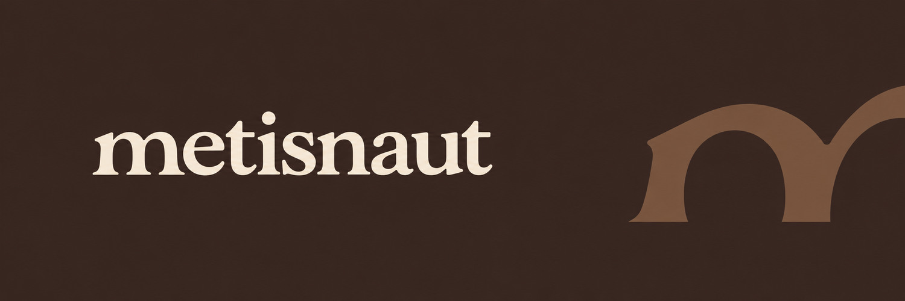

Independent projects exploring geopolitics, economics, and data.
Current project
In development
Geopolitical analysis engine
How does a political event become an economic risk? I’m developing a project around that question. I’m especially interested in the evidence that connects an event to its possible effects on trade and markets.
Find me on XAbout the name
A navigator’s signature
Metisnaut pairs mêtis, practical cunning, with the idea of a navigator. It’s the name I use across my independent projects.